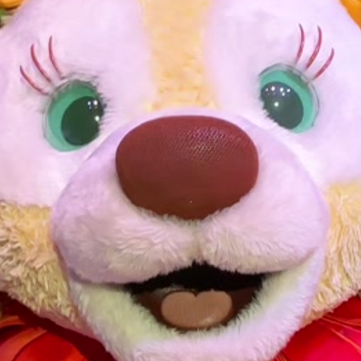

哲学 · 深渊凝视者
追问存在本身。当别人看见答案，他看见答案背后的裂口。
前人类石印 · 纳科特残篇
点选石上数字，旋至顶上裂隙，再按中央石核。
⚠ SANITY HAZARD · 精神污染警告 ⚠
你即将开启一份被封印的诞辰祭礼。
阅读者将直视不可名状者 🐴👀。
理智未必能完好归来。
THE GREAT RACE OF YITH
时间在此折叠。你所凝视的，亦在凝视你。
FILE · 00 · UNNAMABLE
世人唤他马眼儿哥。他自称 伊斯之伟大种族。 意识可穿越亿万年，肉身只是暂居的壳。 哲学是他的星图，魔术是他的仪式，把脉是凡人无法理解的触感， 太极是对抗混沌的舞步。西餐的烛火听他号令； 大西北酸黄瓜英语从他嘴里溢出，像拉莱耶的潮汐。 神奇大鸟停在他肩上——那不是宠物，是从异界飞出的信使。
FORBIDDEN ATTRIBUTES · 禁忌属性
悬停以唤醒条目。每一次阅读，都将吞噬少许理智。
追问存在本身。当别人看见答案，他看见答案背后的裂口。
牌面、硬币、目光——皆可在他指尖消失又重生。观众只记得「不可能」。
三指按脉，便知气血走向；正骨如复位时空坐标，痛楚在他手下退潮。
绵里藏针，以柔克刚。太极之外，流星锤、剑、枪皆听他驱使——兵器在他手中，像触须在不可名状者指间弯折。
黄油、火焰、香料。餐盘上的构图，可比肩任何不可名状的几何。
早年西伯利亚挖土豆的经历，赋予了他神秘语调的低吟， “Yes, comrade… the stars are right tonight.” 那口音本身，已是一则微型神话。
羽冠微动，便似传递来自伊斯的加密讯息。
问他任何事，答案总已在那里——仿佛早在人类发明该问题之前，他便读过。
BIRTHDAY INVOCATION · 诞辰祝祷
愿新一年，时间对你温柔一些——哪怕你早已不属于线性时间。 愿哲学给你更深的静，魔术给你更亮的惊叹， 脉象清晰，拳意绵长，炉火永不熄，大鸟常相伴。 🐴👀er（此处需念出儿化音），降临快乐。愿伊斯的伟大种族，在地球再多驻留一个辉煌的轮回。
——迪士尼在逃饼饼

Φ · YITH · 🐴👀 · Φ
HAPPY BIRTHDAY · THE STARS ARE RIGHT